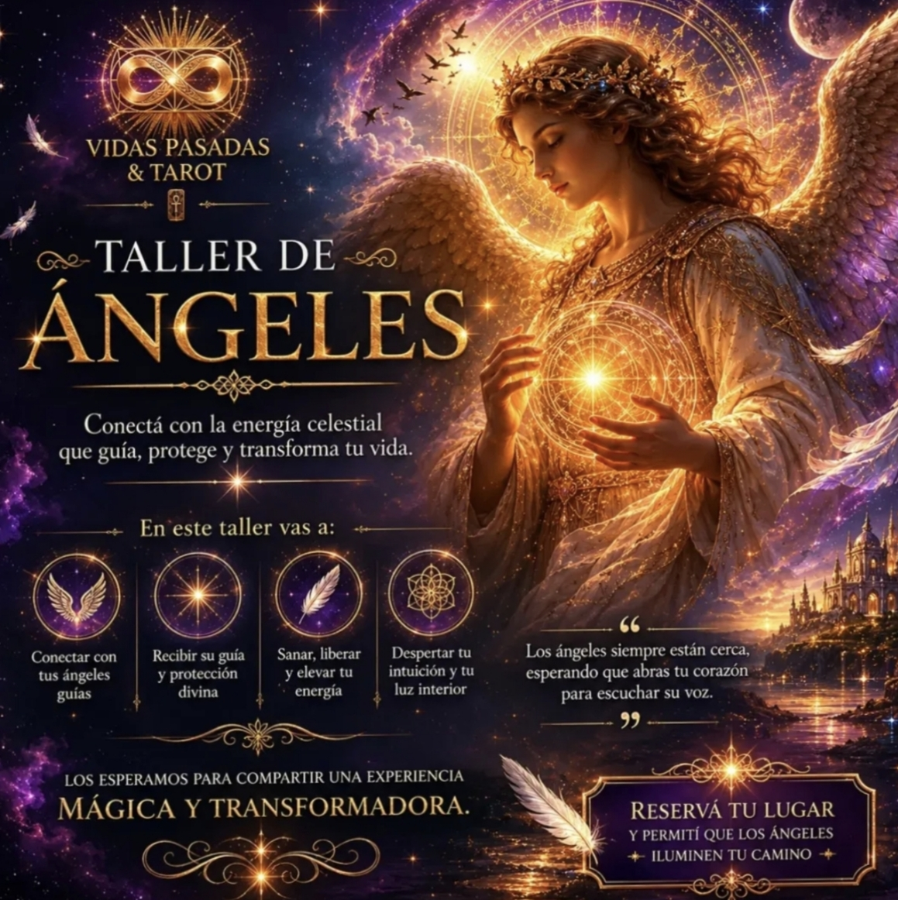
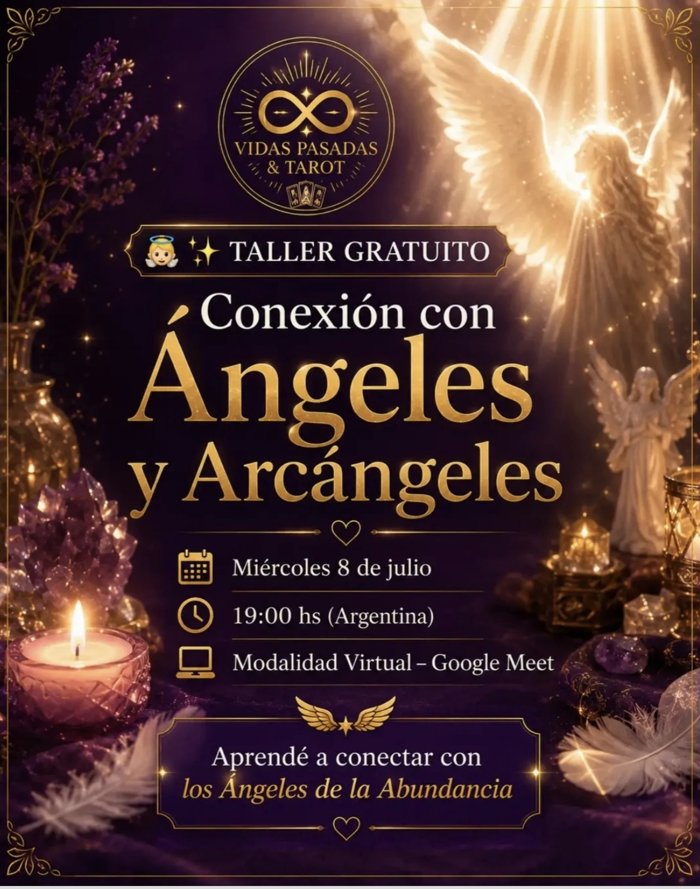
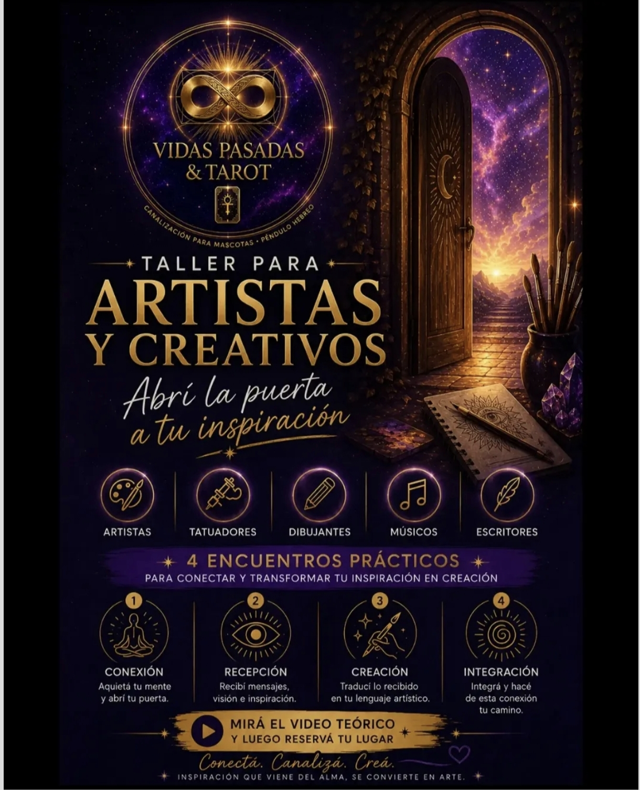

Vidas Pasadas & Tarot
Limpieza energética, lecturas de tarot,
vidas pasadas y canalización para mascotas
Lecturas de tarot, limpiezas con péndulo hebreo, canalización de vidas pasadas y canalización para mascotas. A distancia, online.
Catálogo de sesiones
Elegí el área que querés transformar
Tocá una categoría para ver el detalle de cada sesión y reservar por WhatsApp.
Para cuando el diálogo ya no alcanza y el lazo necesita sanar desde la raíz energética.
Armonización de Vínculos
Para tensiones en lo laboral, familiar o entre amistades que ya no se resuelven solo con palabras.
Armonización de Parejas
Reactivá la comunicación, la confianza y la complicidad cuando la energía deja de fluir como antes.
Alejamiento de Personas Tóxicas
Cortá las fugas de energía que generan ex parejas, ambientes pesados o vínculos que te estancan.
Corte de Lazos Kármicos y Sexuales
Disolvé apegos invisibles de relaciones que ya terminaron, para recuperar tu soberanía energética.
Cuando el estancamiento no tiene una causa lógica, casi siempre hay algo invisible frenando el flujo.
Limpieza Energética de Hogares y Negocios
Eliminá cargas estancadas para que tu espacio vuelva a ser un refugio o un motor de prosperidad.
Limpieza con Péndulo Hebreo
Trabajo profundo sobre tu aura, chakras y campo electromagnético con la vibración de las letras hebreas.
Apertura de Caminos para la Prosperidad
Disolvé bloqueos kármicos y votos antiguos que te frenan justo antes del gran avance económico.
Protección Angelical para Niños
Un canal de resguardo angelical que limpia bloqueos y siembra paz en el entorno de tus hijos.
Testeo Radiestésico
Diagnóstico energético inicial para saber con claridad qué está frenando tu bienestar antes de elegir tu sesión.
Tus encarnaciones anteriores guardan talentos, vínculos y respuestas que tu presente está esperando.
Lectura de Vidas Pasadas
Recorré tus encarnaciones para identificar talentos ocultos y disolver promesas que te atan a la escasez. Recibís todo en audios de WhatsApp.
Lectura de Vínculo en Vidas Pasadas
Elegí hasta 3 vínculos para comprender su origen y propósito en tu vida actual.
Las cartas como espejo: respuestas claras para tomar decisiones con mayor certeza.
Tarot Lectura General
Un paneo completo de tu presente: ❤️ amor y familia, 💰 dinero y trabajo, ✨ salud y energías — más un plus de 3 preguntas puntuales que necesites resolver. Dura 1 hora; es importante estar online durante toda la sesión para aprovecharla, y las preguntas se envían hasta 15 minutos antes de que termine. Solo pido nombre y apellido completo, fecha de nacimiento y, si tenés pareja, su nombre. Ningún dato extra.
Lectura de Vínculo
Qué siente, qué piensa y qué va a hacer esa persona: respuestas concretas en lugar de incertidumbre.
Lectura de Tarot Vocacional
Descubrí qué bloquea tu camino profesional y qué opciones están en sintonía con tu energía.
Lectura de Tarot en Herradura
Un asunto puntual visto en profundidad —pasado, presente y futuro— más 3 preguntas para ir al detalle.
Apoyo energético complementario para procesos que también necesitan sostén espiritual.
Apoyo para Personas en Duelo
Trabajo con la vibración de las letras hebreas para liberar la angustia que el tiempo no termina de borrar. Es un apoyo complementario: no reemplaza el acompañamiento psicológico.
Apoyo Energético para Sanación de Adicciones
Sostén espiritual para tu proceso de recuperación, en conjunto con tu tratamiento profesional.
Desbloqueo Energético para Estudiantes
Liberá la mente en blanco y la ansiedad ante los exámenes limpiando los chakras superiores.
Tu compañero también tiene energía, emociones y un alma que merece ser escuchada.
Limpieza Energética con Péndulo Hebreo para Mascotas
Limpiá el campo energético de tu compañero animal con la vibración del péndulo hebreo.
Canalización para Mascotas
Un puente de comunicación alma a alma para entender qué te quiere decir tu compañero.
Mediumnidad para Mascotas
Un canal para recibir, con respeto y amor, un último mensaje de las mascotas que ya partieron.
Por qué trabajar conmigo
Acompañamiento real, a tu ritmo
Sesiones 100% remotas
Recibís todo en audios de WhatsApp, con la misma efectividad que una sesión presencial.
Diagnóstico antes de cobrar
El testeo radiestésico gratuito define qué necesitás antes de coordinar cualquier pago.
Apoyo, no reemplazo
Las sesiones de duelo y adicciones son complementarias: nunca sustituyen a un profesional de la salud.
Antes de escribir
Preguntas frecuentes
No, todas se realizan a distancia —por audios de WhatsApp— y llegan con la misma potencia y efectividad que una sesión presencial.
No. Es un apoyo complementario. Las sesiones de duelo, adicciones y similares trabajan junto a tu profesional de salud, nunca en su lugar.
Empezá con el testeo radiestésico gratuito: con eso identificamos bloqueos y energías, y de ahí surge la sesión más indicada para tu caso.
Todo se coordina directo por WhatsApp: ahí te cuento la modalidad, la duración y el valor exacto de tu sesión.
Depende del servicio: hay diagnósticos breves y lecturas más profundas de 40 a 60 minutos aproximadamente.
¿Lista o listo para empezar?
Tu momento es ahora
Escribime por WhatsApp y arrancamos con tu testeo radiestésico gratuito.
Encuentros grupales
Nuestros talleres
Espacios para conectar, sanar y despertar tu intuición junto a otros buscadores del alma.

Una experiencia mágica y transformadora donde conectamos con la energía celestial que guía, protege y sana. Gracias a quienes lo vivieron con el corazón abierto. 🕊️

Taller gratuito y virtual. Aprendé a conectar con los Ángeles de la Abundancia y recibí su guía y protección.
Unite al grupo y reservá tu lugar 🔮
Abrí la puerta a tu inspiración. Un recorrido en 4 encuentros prácticos para artistas, tatuadores, músicos y escritores: conectá, canalizá, creá.
Unirme al grupo de WhatsApp